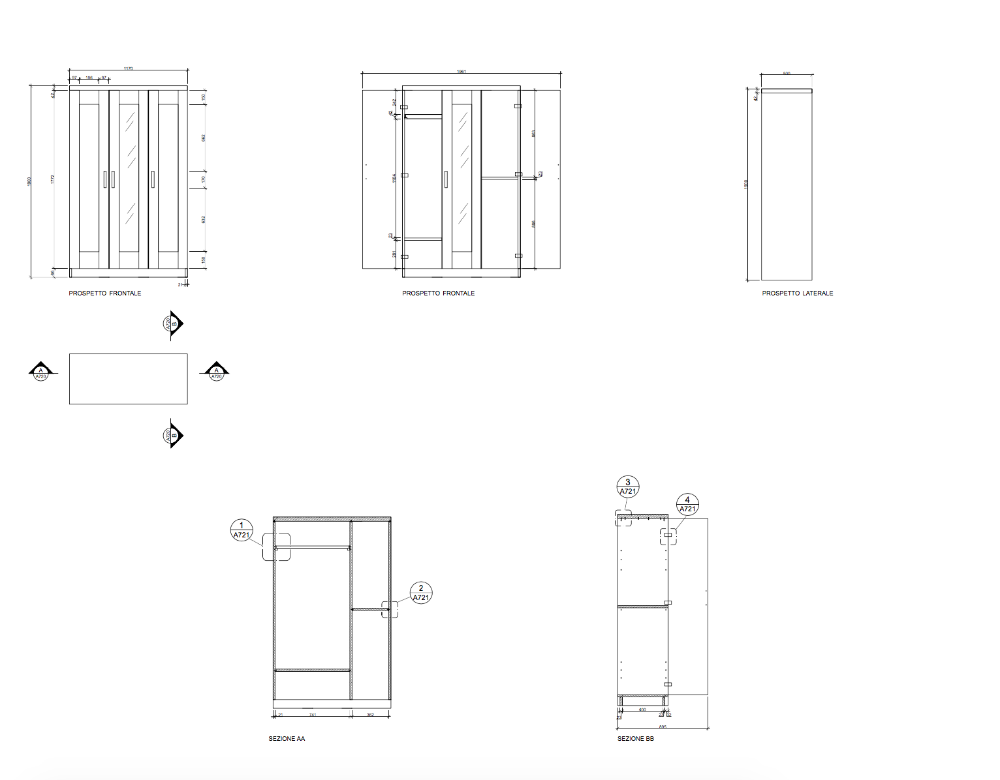
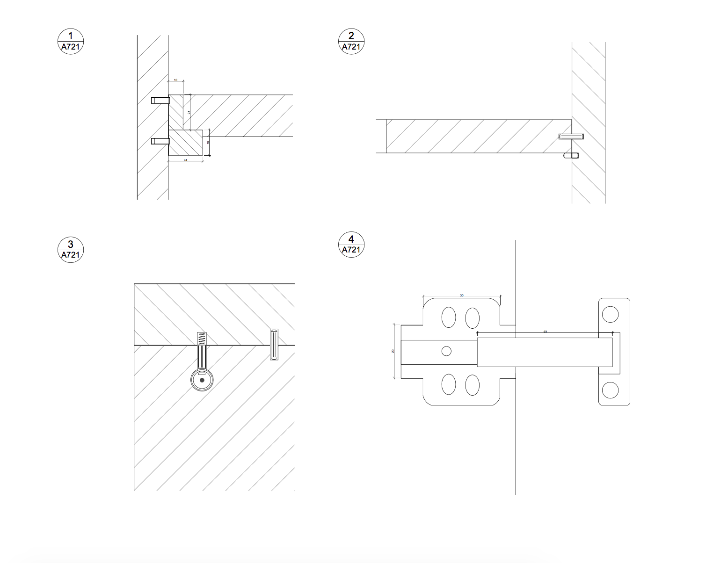
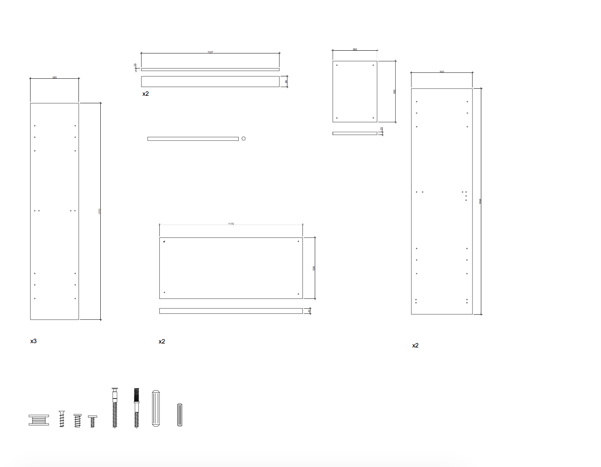

MO-D_2


Struttura letto alta:
Parti principali: Truciolare, Lamina
Pannello superiore/ Cornice dell'anta: Truciolare, Lamina, Plastica ABS
Zoccolo posteriore: Truciolare
Pannello: Fibra di legno, Lacca acrilica goffrata, Lamina
Pannello dell'anta: Fibra di legno, Lamina
Specchio: Vetro
PROSPETTI E SEZIONI
DETTAGLI
ABACO ELEMENTI
 Sito sviluppato per il corso di Strumenti e Metodi del progetto